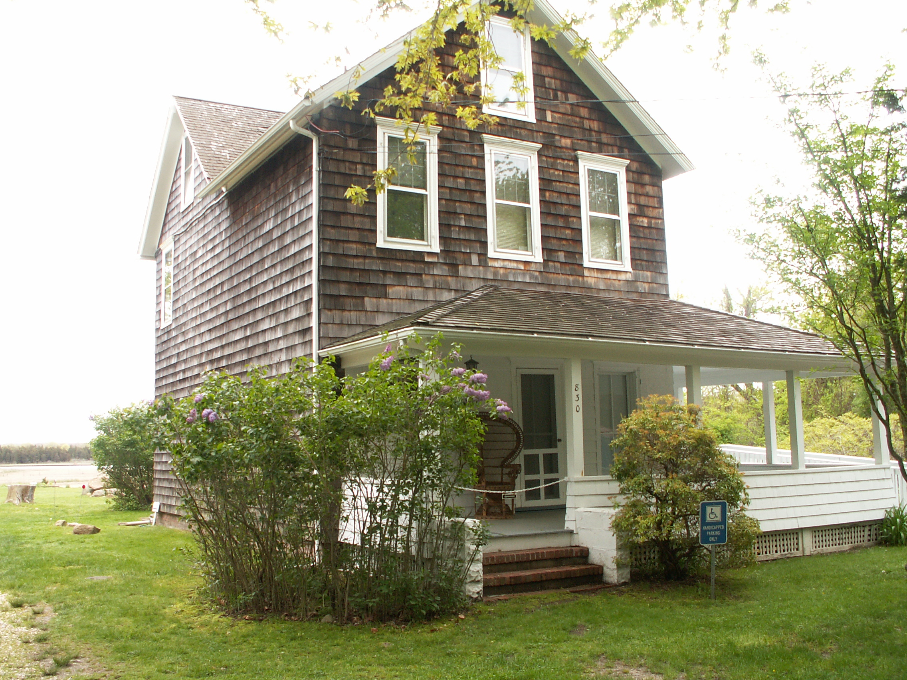

Krasner introduced her husband, artist Jackson Pollock, to influential artists and critics including Willem de Kooning and Clement Greenberg—not the other way around. Krasner helped create the “all-over” technique inspired by Piet Mondrian’s “grid,” which influenced Jackson Pollock’s revolutionary “drip paintings".Read More
Home of Artby Hubert Humperdinck
Great-Art Weekly Blog
Chicken or the Egg?
 Hubert Humperdinck
Hubert Humperdinck
Sunday, June 05, 2016
 1 Comment
1 Comment
Home Springs Eternal
Hubert Humperdinck
Sunday, May 29, 2016
10 Comment

The title of The Springs refers to the town on Long Island where Krasner and Pollock lived and worked. After Krasner’s death, the house became The Pollock-Krasner House and Study Center. Paint used by both artists can be seen on the floorboards of their barn-turned-studio.Read More
Anonymous was a Woman
Hubert Humperdinck
Sunday, May 22, 2016
5 Comment
Signing much of her work as “LK” or not at all, Krasner attempted to escape presumptions about femininity in the work of “women artists” and her ties to Pollock. In attempting to avoid identity politics, Krasner navigated her roles as woman, wife, and artist. Read More
Waste Not, Want Not
Hubert Humperdinck
Sunday, May 08, 2016
1 Comment
Between 1953 and 1955, Krasner moved toward a collage style, creating new works by cutting apart discarded canvas of her own and Pollock’s, pasting the pieces on large color field paintings previously exhibited at Betty Parson’s New York gallery. Influenced by Matisse, Milkweed (1955) is a stunning example. Read More
Go Figure
Hubert Humperdinck
Sunday, June 05, 2016
1 Comment
Known primarily for her contributions to Abstract Expressionism, Krasner did paint figural work early in her career. Though much of it has been destroyed, two self-portraits (1929 and 1930) remain from her time at the National Academy of Design in New York City.Read More